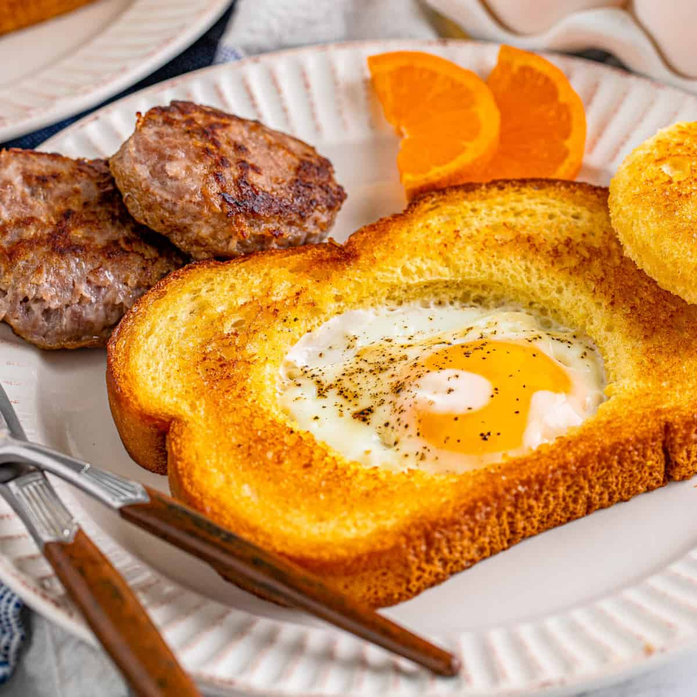

Egg Toast

Make egg toast, but not in a toaster, mind you!
Ingredients
Egg
Bread
Butter
Steps
Heat the butter in a skillet.
Bite the hole in the bread. A chef's snack!
Put bread in pan, crack egg in hole
Cook to desired done-ness; then let cool and serve!
Home